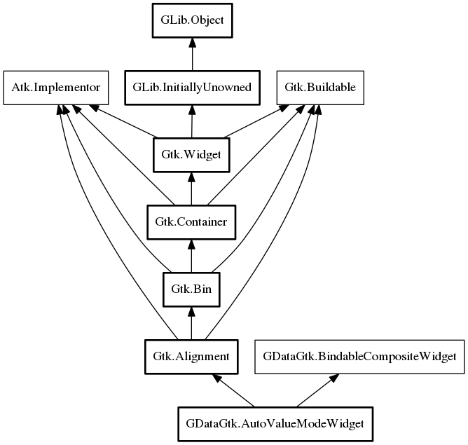

AutoValueModeWidget
Object Hierarchy:

Description:
public class AutoValueModeWidget :
Alignment,
BindableCompositeWidget
Provides simplest possible automatic widget which can be created by value type, class type/property name or binding transfer
AutoValueWidget is very much similar to this widget, but lighter and lacking certain bang. When AutoValueModeWidget switches mode, it
does that with animation and can provide invalid state as well
This widget is probably not suggested to use in listboxes as it is heavy composite widget.
TODO, ability to prebuild cached generation where needs like listbox rows can cache creation which would bring it to most optimized state
since all discovery is eliminated. Needs BindingDataTransfer optimization first
TODO, investigate AutoValueWidget.preset and implement the same
Since:
0.1
Content:
Properties:
- public string data_tooltip { set; get; }
Specifies tooltip that should be shown on widgets
- public EditMode mode { set; get; }
Specifies current edit mode in which widget is in
- public bool is_valid { get; }
Specifies if widget is currently in valid state or not. Invalid state
means that it is showing fallback warning in stack
- public CreationEditMode creation_mode { get; }
Creation mode that defines EDIT/VIEW mode which was specified at the
time of creation
- public DefaultWidgets default_widgets { set; owned get; }
Specifies DefaultWidgets object which was used to create widget. This
can be changed at any time and widget will simply adapt to be recreated in new mode.
Creation methods:
Methods:
Signals:
Inherited Members:
All known members inherited from class Gtk.Alignment
- bottom_padding
- left_padding
- right_padding
- top_padding
- xalign
- xscale
- yalign
- yscale
- get_padding
- @set
- set_padding
All known members inherited from class Gtk.Bin
All known members inherited from class Gtk.Container
- border_width
- child
- resize_mode
- class_find_child_property
- class_list_child_properties
- handle_border_width
- install_child_properties
- install_child_property
- add_with_properties
- child_get
- child_get_property
- child_get_valist
- child_notify
- child_notify_by_pspec
- child_set
- child_set_property
- child_set_valist
- child_type
- composite_name
- forall
- forall_internal
- @foreach
- get_border_width
- get_child_property
- get_children
- get_focus_chain
- get_focus_child
- get_focus_hadjustment
- get_focus_vadjustment
- get_path_for_child
- get_resize_mode
- propagate_draw
- resize_children
- set_border_width
- set_child_property
- set_focus_chain
- set_focus_hadjustment
- set_focus_vadjustment
- set_reallocate_redraws
- set_resize_mode
- unset_focus_chain
- add
- check_resize
- remove
- set_focus_child
All known members inherited from class Gtk.Widget
All known members inherited from class GLib.Object
- @new
- new_valist
- newv
- add_toggle_ref
- add_weak_pointer
- bind_property
- connect
- constructed
- disconnect
- dispose
- dup_data
- dup_qdata
- freeze_notify
- @get
- get_class
- get_data
- get_property
- get_qdata
- get_type
- notify_property
- @ref
- ref_sink
- replace_data
- replace_qdata
- remove_toggle_ref
- remove_weak_pointer
- @set
- set_data
- set_data_full
- set_property
- set_qdata
- set_qdata_full
- steal_data
- steal_qdata
- thaw_notify
- unref
- weak_ref
- weak_unref
- notify
- ref_count
All known members inherited from interface
GDataGtk.BindableCompositeWidget
All known members inherited from interface Atk.Implementor
All known members inherited from interface Gtk.Buildable
- add_child
- construct_child
- custom_finished
- custom_tag_end
- custom_tag_start
- get_internal_child
- get_name
- parser_finished
- set_buildable_property
- set_name